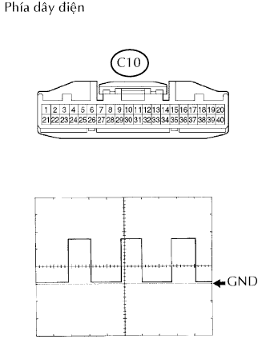
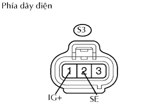

HỆ THỐNG ĐỒNG HỒ ĐO/ĐỒNG HỒ BÁO > Hỏng đồng hồ tốc độ xe |
| 1.KIỂM TRA CẦU CHÌ (ECU-IG & GAUGE) |
Tháo cầu chì ECU-IG & GAUGE ra khỏi hộp đầu nối phía người lái.
Đo điện trở của cầu chì.
|
| ||||
| OK | |
| 2.KIỂM TRA CẢM BIẾN TỐC ĐỘ XE |
Đo điện áp của cảm biến.
| Nối dụng cụ đo | Điều kiện | Điều kiện tiêu chuẩn |
| 2 - 3 |
| 10 đến 14 V (Tạo xung) |
|
| ||||
| OK | |
| 3.KIỂM TRA CỤM ĐỒNG HỒ TÁP LÔ |
|  |
Ngắt giắc C10 của đồng hồ.
Dùng máy đo hiện sóng, kiểm tra dạng sóng tín hiệu của đồng hồ táp lô.
| Nối dụng cụ đo | Đặt dụng cụ đo | Tình trạng xe |
| C10-5 - Mát thân xe | 5 V/DIV., 20 msec./DIV. | Lái xe với tốc độ 20 km/h. |
|
| ||||
| NG | |
| 4.KIỂM TRA DÂY ĐIỆN (CẢM BIẾN - ẮC QUY VÀ MÁT THÂN XE) |
|  |
Ngắt giắc nối S3 của cảm biến.
Đo điện áp của giắc nối phía dây điện.
| Nối dụng cụ đo | Điều kiện | Điều kiện tiêu chuẩn |
| S3-1 (IG+) - Mát thân xe | Khoá điện ON | 10 đến 14 V |
| Khoá điện OFF | Dưới 1 V |
Đo điện trở giữa của giắc nối phía dây điện.
| Nối dụng cụ đo | Điều kiện tiêu chuẩn |
| S3-2 (SE) - Mát thân xe | Dưới 1 Ω |
|
| ||||
| OK | |
| 5.KIỂM TRA DÂY ĐIỆN (CẢM BIẾN -ĐỒNG HỒ TÁP LÔ) |
Ngắt giắc nối S3 của cảm biến.
Ngắt giắc C10 của đồng hồ.
Đo điện trở của các giắc nối phía dây điện.
| Nối dụng cụ đo | Điều kiện tiêu chuẩn |
| S3-3 (SI) - C10-5 | Dưới 1 Ω |
|
| ||||
| OK | ||
| ||